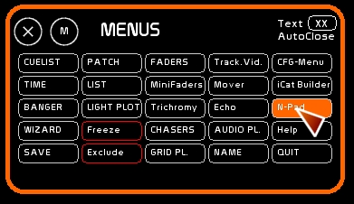
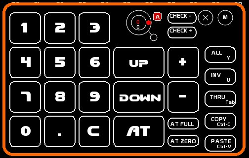
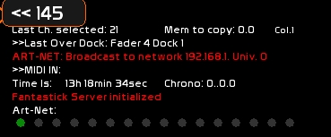
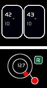
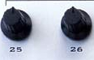
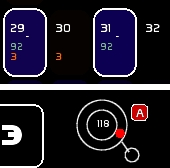
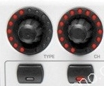
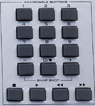
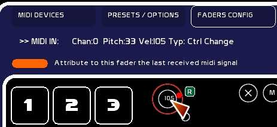
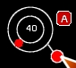

Le Num-Pad est accessible:

Le Num-Pad est prévu pour la saisie des circuits avec écran tactile, ou via la souris. Il reproduit en gros un clavier numérique.

Voir les actions de sélection d'un circuit dans L'espace Circuits
La chaine de carcatères tapée via le Num-Pad s'affiche dans la fenêtre de retours d'infos.


Cette roue sert essentiellement à déporter en commande Midi un encodeur rotatif, comme ceux la BCF ou de l'UC-33.
Cet encodeur manipulera les niveaux des circuits sélectionnés sur scène ou en Blind.
Il comporte deux modes, pour le midi:
Ce choix de mode se fait en clickant la case [A] pour la passer en [R].
On peut se servir éventuellement de cette mollette avec la souris, uniquement en mode absolu.
Un potentiomètre a une butée minima, et une butée maxima. En midi, 0 et 127. Cette butée est physique.

Si votre périphérique midi comporte ce genre de rotatifs, ou un fader normal, vous ne pourrez travailler qu'en mode absolu.
Les circuits sélectionnés recevront donc le niveau du rotatif converti en pourcentages.
Ce niveau écrasera le niveau précédemment attribué.
Prendre la main sur un circuit à 70% et toucher le rotatif légèrement mettra les circuits sélectionnés au niveau de celui-ci.
Ici les circuits sont mis à 92/100 ( la conversion de 118/127 en pourcentage ):

Certains rotatifs sont en effet sur une vis sans fin.

Ils délivrent un signal qui peut être paramétré dans le périphérique
Ce sans passer par les valeurs intermédiaires.
Le comportement du rotatif en mode Absolu ou Relatif se fait dans le périphérique midi.
Pour programmer l'encodeur d'une BCF2000 en comportement Relatif ( manipulations sur la Behringer ) :
Dans WhiteCat, on mettra la roue en mode Relatif:
Tout circuit sélectionné sera donc ajouté ou retranché de manière souple d'un pas dmx si vous êtes en mode 0-255, ou d'1% si vous êtes en mode pourcentage.
Prendre la main sur un circuit à 11% et toucher le rotatif vers la gauche baissera de 1% les circuits sélectionnés:
Certains périphériques midi peuvent avoir des pavés numériques émettant des signaux midi, comme l'UC-33.

Le NumPad est donc complètement affectable en midi.
Pour les iPhone/Pod et iPad, voir iCat pour iPod/iPhone/iPad, basée sur le logiciel Fantastick.
Si vous ne voulez pas utiliser Fantastick sous iOS, ou que vous êtes sous Android, vous pouvez utiliser des logiciels tiers émettant du midi pour créer une télécommande: Control de Charlie Roberts, OSC Touch sont quelques exemples très utilisés.
Vous pouvez utiliser Banger pour émuler le clavier. Chacun des 127 bangers est affectable à une note midi.
Pour que la roue puisse répondre au signal midi du rotatif:

La petite pastille permet d'enclencher le MidiOut correspondant à la roue de niveau.
